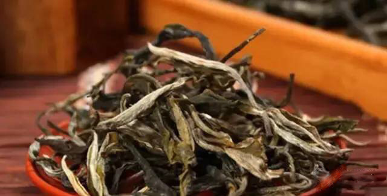
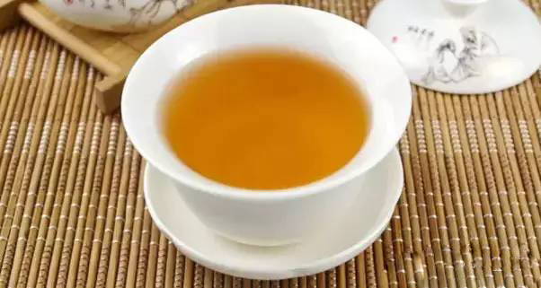
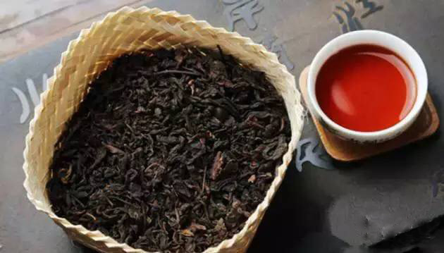

交易中心
交易中心
 交易指南
交易指南
 普洱档案
普洱档案
 普洱资讯
普洱资讯
 下载中心
下载中心
 活动频道
活动频道

普洱茶国家标准是什么
2015-12-28 11:24 来源：未知
近几年，国内的普洱茶收藏热一直持续升温，普洱茶成为人们谈论最多、争相购买的产品。但在人们购买普洱茶时有一些雾里看花的感觉，他们不知道真正的普洱茶应该符合哪些条件，下面一起来看看普洱茶国家标准是什么?
普洱茶收藏盛行：品质好的普洱茶，每年能以10%至15%的增长率升值。
如今各茶庄都把普洱茶摆到显要的位置吸引顾客，更有"存钱不如存普洱，开店就开茶叶店"的说法。而各种各样的普洱茶"珍藏版"也层出不穷，老茶饼动辄拍出数万乃至数十万元高价已非新鲜事了。但是，任何投资都是有风险的，普洱茶也不例外，若是平时不饮用普洱茶的人在购买时不小心就会受骗上当。必须要选择品质高的普洱茶，通过正确的储藏方式保存，才能让普洱茶越陈越香，实现增值。
根据普洱茶国家标准必须符合“四个原则”：
第一，普洱茶保护区域是云南省的普洱、西双版纳、临沧、保山等11个州市、75个县(市、区)、639个乡(镇、街道办事处)现辖行政区域。不是以上保护区域生产的茶，都不是普洱茶。

二是大叶种。在云南普洱茶的保护区域中，有大叶种、中叶种、小叶种的茶叶，但是生产普洱茶的只能是这个区域中的大叶种。

第三是晒青。普洱茶青毛茶的干燥方式必须是"日光干燥",即晒青，晒青的目的是为了保持普洱茶酶的活性，保证它的后发酵。这是普洱茶区别于其他茶的关键工艺之一。

第四是后发酵。普洱茶是在晒青毛茶的基础上，紧压成型然后自然发酵，或者是用晒青毛茶经过人工渥堆发酵，这两种方式都是后发酵，区别于红茶、乌龙茶的发酵过程。

真正的普洱茶必须符合以上四个条件，普洱茶国家标准必须遵循以上四个原则，本文仅供参考！希望本文的介绍对消费有所帮助。

- 喝茶不过三个阶段：解渴、知味、怡情2016-03-07
- 【普洱课堂】茶叶渣的十大神奇妙用告诉你！2016-03-07
- 个性化，普洱茶行业未来的主流!2016-03-07
- 蒙顶山普洱：吸引用户投资的秘密武器大公开2016-03-03
- 茶苦涩青霉味，都是啥造成的?2016-03-03